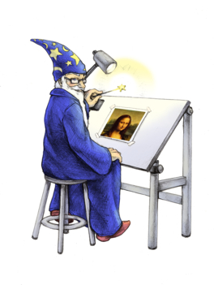
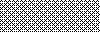
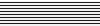
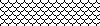

![[sponsor]](../images/dino-direct.jpg)
ImageMagick Image Formats
Introducing Image Formats
ImageMagick uses an ASCII string known as magick (e.g. GIF) to identify file formats, algorithms acting as formats, built-in patterns, and embedded profile types.
Support for some of the formats are delegated to libraries or external programs. The Installation Guide describes where to find these distributions and any special configuration options required.
To get a complete listing of which image formats are supported on your system, type
$ identify -list format
On some platforms, ImageMagick automagically processes these extensions: .gz for Zip compression, .Z for Unix compression, .bz2 for block compression, and .pgp for PGP encryption. For example, a PNM image called image.pnm.gz is automagically uncompressed.
Supported Image Formats
ImageMagick supports reading over 100 major file formats (not including sub-formats). The following table provides a summary of the supported image formats.
| Tag | Mode | Description | Notes |
|---|---|---|---|
| AAI | RW | AAI Dune image | |
| ART | R | PFS: 1st Publisher | Format originally used on the Macintosh (MacPaint?) and later used for PFS: 1st Publisher clip art. |
| ARW | R | Sony Digital Camera Alpha Raw Image Format | |
| AVI | R | Microsoft Audio/Visual Interleaved | |
| AVS | RW | AVS X image | |
| BMP, BMP2, BMP3 | RW | Microsoft Windows bitmap | By default the BMP format is version 4. Use BMP3 and BMP2 to write versions 3 and 2 respectively. |
| CALS | R | Continuous Acquisition and Life-cycle Support Type 1 image | Specified in MIL-R-28002 and MIL-PRF-28002. Standard blueprint archive format as used by the US military to replace microfiche. |
| CGM | R | Computer Graphics Metafile | Requires ralcgm to render CGM files. |
| CIN | RW | Kodak Cineon Image Format | Use -set to specify the image gamma or black and white points (e.g. -set gamma 1.7, -set reference-black 95, -set reference-white 685). Properties include cin:file.create_date, cin:file.create_time, cin:file.filename, cin:file.version, cin:film.count, cin:film.format, cin:film.frame_id, cin:film.frame_position, cin:film.frame_rate, cin:film.id, cin:film.offset, cin:film.prefix, cin:film.slate_info, cin:film.type, cin:image.label, cin:origination.create_date, cin:origination.create_time, cin:origination.device, cin:origination.filename, cin:origination.model, cin:origination.serial, cin:origination.x_offset, cin:origination.x_pitch, cin:origination.y_offset, cin:origination.y_pitch, cin:user.data. |
| CMYK | RW | Raw cyan, magenta, yellow, and black samples | Use -size and -depth to specify the image width, height, and depth. To specify a single precision floating-point format, use -define quantum:format=floating-point. Set the depth to 32 for single precision floats, 64 for double precision, and 16 for half-precision. |
| CMYKA | RW | Raw cyan, magenta, yellow, black, and alpha samples | Use -size and -depth to specify the image width, height, and depth. To specify a single precision floating-point format, use -define quantum:format=floating-point. Set the depth to 32 for single precision floats, 64 for double precision, and 16 for half-precision. |
| CR2 | R | Canon Digital Camera Raw Image Format | Requires an explicit image format otherwise the image is interpreted as a TIFF image (e.g. cr2:image.cr2). |
| CRW | R | Canon Digital Camera Raw Image Format | |
| CUR | R | Microsoft Cursor Icon | |
| CUT | R | DR Halo | |
| DCM | R | Digital Imaging and Communications in Medicine (DICOM) image | Used by the medical community for images like X-rays. ImageMagick sets the initial display range based on the Window Center (0028,1050) and Window Width (0028,1051) tags. Use -define dcm:display-range=reset to set the display range to the minimum and maximum pixel values. |
| DCR | R | Kodak Digital Camera Raw Image File | |
| DCX | RW | ZSoft IBM PC multi-page Paintbrush image | |
| DIB | RW | Microsoft Windows Device Independent Bitmap | DIB is a BMP file without the BMP header. Used to support embedded images in compound formats like WMF. |
| DJVU | R | ||
| DNG | R | Digital Negative | Requires an explicit image format otherwise the image is interpreted as a TIFF image (e.g. dng:image.dng). |
| DOT | R | Graph Visualization | Use -define to specify the layout engine (e.g. -define dot:layout-engine=twopi). |
| DPX | RW | SMPTE Digital Moving Picture Exchange 2.0 (SMPTE 268M-2003) | Use -set to specify the image gamma or black and white points (e.g. -set gamma 1.7, -set reference-black 95, -set reference-white 685). |
| EMF | R | Microsoft Enhanced Metafile (32-bit) | Only available under Microsoft Windows. |
| EPDF | RW | Encapsulated Portable Document Format | |
| EPI | RW | Adobe Encapsulated PostScript Interchange format | Requires Ghostscript to read. |
| EPS | RW | Adobe Encapsulated PostScript | Requires Ghostscript to read. |
| EPS2 | W | Adobe Level II Encapsulated PostScript | Requires Ghostscript to read. |
| EPS3 | W | Adobe Level III Encapsulated PostScript | Requires Ghostscript to read. |
| EPSF | RW | Adobe Encapsulated PostScript | Requires Ghostscript to read. |
| EPSI | RW | Adobe Encapsulated PostScript Interchange format | Requires Ghostscript to read. |
| EPT | RW | Adobe Encapsulated PostScript Interchange format with TIFF preview | Requires Ghostscript to read. |
| EXR | RW | High dynamic-range (HDR) file format developed by Industrial Light & Magic | See High Dynamic-Range Images for details on this image format. |
| FAX | RW | Group 3 TIFF | This format is a fixed width of 1728 as required by the standard. See TIFF format. Note that FAX machines use non-square pixels which are 1.5 times wider than they are tall but computer displays use square pixels so FAX images may appear to be narrow unless they are explicitly resized using a resize specification of 100x150%. |
| FIG | R | FIG graphics format | Requires TransFig. |
| FITS | RW | Flexible Image Transport System | To specify a single-precision floating-point format, use -define quantum:format=floating-point. Set the depth to 64 for a double-precision floating-point format. |
| FPX | RW | FlashPix Format | FlashPix has the option to store mega- and giga-pixel images at various resolutions in a single file which permits conservative bandwidth and fast reveal times when displayed within a Web browser. Requires the FlashPix SDK. |
| GIF | RW | CompuServe Graphics Interchange Format | 8-bit RGB PseudoColor with up to 256 palette entires. Specify the format GIF87 to write the older version 87a of the format. Use -transparent-color to specify the GIF transparent color (e.g. -transparent-color wheat). |
| GPLT | R | Gnuplot plot files | Requires gnuplot4.0.tar.Z or later. |
| GRAY | RW | Raw gray samples | Use -size and -depth to specify the image width, height, and depth. To specify a single precision floating-point format, use -define quantum:format=floating-point. Set the depth to 32 for single precision floats, 64 for double precision, and 16 for half-precision. |
| HDR | RW | Radiance RGBE image format | |
| HPGL | R | HP-GL plotter language | Requires hp2xx-3.4.4.tar.gz |
| HRZ | RW | Slow Scane TeleVision | |
| HTML | RW | Hypertext Markup Language with a client-side image map | Also known as HTM. Requires html2ps to read. |
| ICO | R | Microsoft icon | Also known as ICON. |
| INFO | W | Format and characteristics of the image | |
| INLINE | R | Base64-encoded inline image | The inline image look similar to inline:data:;base64,/9j/4AAQSk...knrn//2Q==. If the inline image exceeds 5000 characters, it must be referenced from a file (e.g. inline:inline.txt). |
| JBIG | RW | Joint Bi-level Image experts Group file interchange format | Also known as BIE and JBG. Requires jbigkit-1.6.tar.gz. |
| JNG | RW | Multiple-image Network Graphics | JPEG in a PNG-style wrapper with transparency. Requires libjpeg and libpng-1.0.11 or later, libpng-1.2.5 or later recommended. |
| JP2 | RW | JPEG-2000 JP2 File Format Syntax | Specify the encoding options with the -define option See JP2 Encoding Options for more details. |
| JPC | RW | JPEG-2000 Code Stream Syntax | Specify the encoding options with the -define option See JP2 Encoding Options for more details. |
| JPEG | RW | Joint Photographic Experts Group JFIF format | Note, JPEG is a lossy compression. In addition, you cannot create black and white images with JPEG nor can you save transparency. Requires jpegsrc.v8c.tar.gz. You can optionally define the DCT method, for example to specify the float method, use -define jpeg:dct-method=float. By default we compute optimal Huffman coding tables. Specify -define jpeg:optimize-coding=false to use the default Huffman tables. Two other options include -define jpeg:block-smoothing and -define jpeg:fancy-upsampling. Set the sampling factor with -define jpeg:sampling-factor. You can size the image with jpeg:size, for example -define jpeg:size=128x128. To restrict the maximum file size, use jpeg:extent, for example -define jpeg:extent=400kb. Finally, to define one or more custom quantization tables, use -define jpeg:q-table=filename. |
| MAN | R | Unix reference manual pages | Requires that GNU groff and Ghostcript are installed. |
| MAT | R | MATLAB image format | |
| MIFF | RW | Magick image file format | This format persists all image attributes known to ImageMagick. To specify a single precision floating-point format, use -define quantum:format=floating-point. Set the depth to 32 for single precision floats, 64 for double precision, and 16 for half-precision. |
| MONO | RW | Bi-level bitmap in least-significant-byte first order | |
| MNG | RW | Multiple-image Network Graphics | A PNG-like Image Format Supporting Multiple Images, Animation and Transparent JPEG. Requires libpng-1.0.11 or later, libpng-1.2.5 or later recommended. An interframe delay of 0 generates one frame with each additional layer composited on top. For motion, be sure to specify a non-zero delay. |
| M2V | RW | Motion Picture Experts Group file interchange format (version 2) | Requires ffmpeg. |
| MPEG | RW | Motion Picture Experts Group file interchange format (version 1) | Requires ffmpeg. |
| MPC | RW | Magick Persistent Cache image file format | The most efficient data processing pattern is a write-once, read-many-times pattern. The image is generated or copied from source, then various analyses are performed on the image pixels over time. MPC supports this pattern. MPC is the native in-memory ImageMagick uncompressed file format. This file format is identical to that used by ImageMagick to represent images in memory and is read by mapping the file directly into memory. The MPC format is not portable and is not suitable as an archive format. It is suitable as an intermediate format for high-performance image processing. The MPC format requires two files to support one image. Image attributes are written to a file with the extension .mpc, whereas, image pixels are written to a file with the extension .cache. |
| MPR | RW | Magick Persistent Registry | This format permits you to write to and read images from memory. The image persists until the program exits. For example, let's use the MPR to create a checkerboard:
convert \( -size 15x15 canvas:black canvas:white -append \) \ \( +clone -flip \) +append -write mpr:checkers +delete \ -size 240x240 tile:mpr:checkers board.png |
| MRW | R | Sony (Minolta) Raw Image File | |
| MSL | RW | Magick Scripting Language | MSL is the XML-based scripting language supported by the conjure utility. MSL requires the libxml2 delegate library. |
| MTV | RW | MTV Raytracing image format | |
| MVG | RW | Magick Vector Graphics. | The native ImageMagick vector metafile format. A text file containing vector drawing commands accepted by convert's -draw option. |
| NEF | R | Nikon Digital SLR Camera Raw Image File | |
| ORF | R | Olympus Digital Camera Raw Image File | |
| OTB | RW | On-the-air Bitmap | |
| P7 | RW | Xv's Visual Schnauzer thumbnail format | |
| PALM | RW | Palm pixmap | |
| PAM | W | Common 2-dimensional bitmap format | |
| CLIPBOARD | RW | Windows Clipboard | Only available under Microsoft Windows. |
| PBM | RW | Portable bitmap format (black and white) | |
| PCD | RW | Photo CD | The maximum resolution written is 768x512 pixels since larger images require huffman compression (which is not supported). |
| PCDS | RW | Photo CD | Decode with the sRGB color tables. |
| PCL | W | HP Page Control Language | Use -define to specify fit to page option (e.g. -define pcl:fit-to-page=true). |
| PCX | RW | ZSoft IBM PC Paintbrush file | |
| PDB | RW | Palm Database ImageViewer Format | |
| RW | Portable Document Format | Requires Ghostscript to read. By default, ImageMagick sets the page size to the MediaBox. Some PDF files, however, have a CropBox or TrimBox that is smaller than the MediaBox and may include white space, registration or cutting marks outside the CropBox or TrimBox. To force ImageMagick to use the CropBox or TrimBox rather than the MediaBox, use -define (e.g. -define pdf:use-cropbox=true or -define pdf:use-trimbox=true). Use -density to improve the appearance of your PDF rendering (e.g. -density 300x300). Use -alpha remove to remove transparency. To specify direct conversion from Postscript to PDF, use -define delegate:bimodel=true. | |
| PEF | R | Pentax Electronic File | Requires an explicit image format otherwise the image is interpreted as a TIFF image (e.g. pef:image.pef). |
| PFA | R | Postscript Type 1 font (ASCII) | Opening as file returns a preview image. |
| PFB | R | Postscript Type 1 font (binary) | Opening as file returns a preview image. |
| PFM | RW | Portable float map format | |
| PGM | RW | Portable graymap format (gray scale) | |
| PICON | RW | Personal Icon | |
| PICT | RW | Apple Macintosh QuickDraw/PICT file | |
| PIX | R | Alias/Wavefront RLE image format | |
| PNG | RW | Portable Network Graphics | Requires libpng-1.0.11 or later, libpng-1.2.5 or later recommended. The PNG specification does not support pixels-per-inch units, only pixels-per-centimeter. |
| PNG8 | RW | Portable Network Graphics | 8-bit indexed with optional binary transparency |
| PNG24 | RW | Portable Network Graphics | opaque 24-bit RGB |
| PNG32 | RW | Portable Network Graphics | opaque or transparent 32-bit RGBA |
| PNM | RW | Portable anymap | PNM is a family of formats supporting portable bitmaps (PBM) , graymaps (PGM), and pixmaps (PPM). There is no file format associated with pnm itself. If PNM is used as the output format specifier, then ImageMagick automagically selects the most appropriate format to represent the image. The default is to write the binary version of the formats. Use -compress none to write the ASCII version of the formats. |
| PPM | RW | Portable pixmap format (color) | |
| PS | RW | Adobe PostScript file | Requires Ghostscript to read. To force ImageMagick to respect the crop box, use -define (e.g. -define ps:use-cropbox=true). Use -density to improve the appearance of your Postscript rendering (e.g. -density 300x300). Use -alpha remove to remove transparency. To specify direct conversion from PDF to Postscript, use -define delegate:bimodel=true. |
| PS2 | RW | Adobe Level II PostScript file | Requires Ghostscript to read. |
| PS3 | RW | Adobe Level III PostScript file | Requires Ghostscript to read. |
| PSB | RW | Adobe Large Document Format | |
| PSD | RW | Adobe Photoshop bitmap file | |
| PTIF | RW | Pyramid encoded TIFF | Multi-resolution TIFF containing successively smaller versions of the image down to the size of an icon. |
| PWP | R | Seattle File Works multi-image file | |
| RAD | R | Radiance image file | Requires that ra_ppm from the Radiance software package be installed. |
| RAF | R | Fuji CCD-RAW Graphic File | |
| RGB | RW | Raw red, green, and blue samples | Use -size and -depth to specify the image width, height, and depth. To specify a single precision floating-point format, use -define quantum:format=floating-point. Set the depth to 32 for single precision floats, 64 for double precision, and 16 for half-precision. |
| RGBA | RW | Raw red, green, blue, and alpha samples | Use -size and -depth to specify the image width, height, and depth. To specify a single precision floating-point format, use -define quantum:format=floating-point. Set the depth to 32 for single precision floats, 64 for double precision, and 16 for half-precision. |
| RLA | R | Alias/Wavefront image file | |
| RLE | R | Utah Run length encoded image file | |
| SCT | R | Scitex Continuous Tone Picture | |
| SFW | R | Seattle File Works image | |
| SGI | RW | Irix RGB image | |
| SHTML | W | Hypertext Markup Language client-side image map | Used to write HTML clickable image maps based on a the output of montage or a format which supports tiled images such as MIFF. |
| SID, MrSID | R | Multiresolution seamless image | Requires the mrsidgeodecode command line utility that decompresses MG2 or MG3 SID image files. |
| SUN | RW | SUN Rasterfile | |
| SVG | RW | Scalable Vector Graphics | Requires libxml2 and freetype-2. Note that SVG is a complex specification and support for the specification in ImageMagick is not complete. |
| TGA | RW | Truevision Targa image | Also known as formats ICB, VDA, and VST. |
| TIFF | RW | Tagged Image File Format | Also known as TIF. Requires tiff-v3.6.1.tar.gz or later. Use -define to specify the rows per strip (e.g. -define tiff:rows-per-strip=8). To define the tile geometry, use for example, -define tiff:tile-geometry=128x128. To specify a signed format, use -define quantum:format=signed. To specify a single-precision floating-point format, use -define quantum:format=floating-point. Set the depth to 64 for a double-precision floating-point format. Use -define quantum:polarity=min-is-black or -define quantum:polarity=min-is-white toggle the photometric interpretation for a bilevel image. Specify the extra samples as associated or unassociated alpha with, for example, -define tiff:alpha=unassociated. Set the fill order with -define tiff:fill-order=msb|lsb. Set the TIFF endianess with -define tiff:endian=msb|lsb. Use -define tiff:exif-properties=false to skip reading the EXIF properties. You can set a number of TIFF software attributes including host computer, artist, timestamp, make, model, software, and copyright. For example, -set tiff:software "My Company". |
| TIM | R | PSX TIM file | |
| TTF | R | TrueType font file | Requires freetype 2. Opening as file returns a preview image. Use -set if you do not want to hint glyph outlines after their scaling to device pixels (e.g. -set type:hinting off). |
| TXT | RW | Raw text file | |
| UIL | W | X-Motif UIL table | |
| UYVY | RW | Interleaved YUV raw image | Use -size and -depth command line options to specify width and height. Use -sampling-factor to set the desired subsampling (e.g. -sampling-factor 4:2:2). |
| VICAR | RW | VICAR rasterfile format | |
| VIFF | RW | Khoros Visualization Image File Format | |
| WBMP | RW | Wireless bitmap | Support for uncompressed monochrome only. |
| WEBP | RW | Weppy image format | Requires the WEBP delegate library. |
| WMF | R | Windows Metafile | Requires libwmf. By default, renders WMF files using the dimensions specified by the metafile header. Use the -density option to adjust the output resolution, and thereby adjust the output size. The default output resolution is 72DPI so -density 144 results in an image twice as large as the default. Use -background color to specify the WMF background color (default white) or -texture filename to specify a background texture image. |
| WPG | R | Word Perfect Graphics File | |
| X | RW | display or import an image to or from an X11 server | Use -define to obtain the image from the root window (e.g. -define x:screen=true). Set x:silent=true to turn off the beep when importing an image. |
| XBM | RW | X Windows system bitmap, black and white only | Used by the X Windows System to store monochrome icons. |
| XCF | R | GIMP image | |
| XPM | RW | X Windows system pixmap | Also known as PM. Used by the X Windows System to store color icons. |
| XWD | RW | X Windows system window dump | Used by the X Windows System to save/display screen dumps. |
| X3F | R | Sigma Camera RAW Picture File | |
| YCbCr | RW | Raw Y, Cb, and Cr samples | Use -size and -depth to specify the image width, height, and depth. |
| YCbCrA | RW | Raw Y, Cb, Cr, and alpha samples | Use -size and -depth to specify the image width, height, and depth. |
| YUV | RW | CCIR 601 4:1:1 | Use -size and -depth command line options to specify width, height, and depth. Use -sampling-factor to set the desired subsampling (e.g. -sampling-factor 4:2:2). |
{kind=link}
Pseudo-image Formats
ImageMagick supports a number of image format specifications which refer to images prepared via an algorithm, or input/output targets. The following table lists these pseudo-image formats:
| Tag | Mode | Description | Notes |
|---|---|---|---|
| CANVAS | R | Canvas image of specified color | Useful to create solid color canvas images. Use
-size and -depth to specify the
image width, height, and depth. Example canvas color specifications
include canvas:red and canvas:#FF0000. If no color is specified a 'white' canvas image is generated. If no -size is specified a single pixel image of the specified color is generated. |
| CAPTION | R | Image caption | |
| CLIPBOARD | RW | Windows Clipboard | Only available under Microsoft Windows. |
| FRACTAL | R | Plasma fractal image | |
| GRADIENT | R | Gradual passing from one shade to another | Returns a rendered linear top-to-bottom gradient image using the specified image size. Specify the desired shading as part of the filename (e.g. gradient:red-blue or gradient:#F00-#00F). If the shading colors are omitted, the default gradient is white-black. |
| HALD | R | Identity Hald CLUT Image | Select order with filename, e.g. hald:5 for order 5. |
| HISTOGRAM | W | Histogram of the image | The histogram includes the unique colors of the image as an image comment. If you have no need for the unique color list, use -define histogram:unique-colors=false to forego this expensive operation. |
| LABEL | R | Text image format | Specify the desired text as the filename (e.g. label:"This a label"). |
| MAP | RW | Colormap intensities and indices | Set -depth to set the sample size of the intensities; indices are 16-bit if colors > 256. |
| MATTE | W | MATTE format | Write only. |
| NULL | RW | NULL image | Useful for creating blank tiles with montage (use NULL:). Also useful as an output format when evaluating image read performance. |
| PANGO | R | Image caption | You can configure the caption layout with these defines: -define pango:auto-dir=true/false, -define pango:ellipsize=start/middle/end, -define pango:gravity-hint=natural/strong/line, -define pango:hinting=none/auto/full, -define pango:indent=points, -define pango:justify=/true/false, -define pango:language=en_US/etc, -define pango:markup=true/false, -define pango:single-paragraph=true/false and -define pango:wrap=word/char/word-char. |
| PLASMA | R | Plasma fractal image | |
| PREVIEW | W | Show a preview an image enhancement, effect, or f/x | Creates a preview montage of images prepared over a parameteric range in order to assist with parameter selection. Specify the desired preview type via the -preview option). |
| W | Send image to your computer printer | Unix users may set the PRINTER (for 'lpr') or LPDEST (for 'lp') environment variables to select the desired printer. | |
| SCAN | R | Import image from a scanner device | Requires SANE Specify the device name and path as the filename (e.g. scan:'hpaio:/usb/Officejet_6200_series?serial=CN4ATCE3G20453'). |
| RADIAL_GRADIENT | R | Gradual radial passing from one shade to another | Returns a rendered radial gradient image using the specified image size. Specify the desired shading as part of the filename (e.g. radial-gradient:red-blue or radial-gradient:#F00-#00F). |
| SCANX | R | Import image from the default scanner device | |
| STEGANO | R | Steganographic image | Use -size command line option to specify width, height, and offset of the steganographic image |
| TILE | R | Tiled image | Create a tiled version of an image at by tiling a image. Use -size to specify the tiled image size. The image is specified similar to TILE:image.miff. |
| UNIQUE | W | Write only unique pixels to the image file. | |
| VID | RW | Visual Image Directory | Used to create a thumbnailed directory (tiled thumbnails) of a set of images which may be used to select images to view via the display program, or saved to a MIFF or SHTML file. |
| WIN | RW | Select image from or display image to your computer screen | Only supported under Microsoft Windows. |
| X | RW | Select image from or display image to your X server screen | Also see the import and display programs. |
| XC | R | Canvas image of specified color | An backward compatible alias for the 'canvas:' psuedo-file format, used to create a solid color canvas image. |
Built-in Images
ImageMagick includes a number of built-in (embedded) images which may be referenced as if they were an image file. The magick: format tag may be used via the syntax magick:name to request an embedded image (e.g. magick:logo). For backwards compatibility, the image specifications GRANITE:, LOGO:, NETSCAPE:, and ROSE: may also be used to request images with those names.
| Tag | Mode | Description | Notes |
|---|---|---|---|
| GRANITE | R | 128x128 granite texture pattern |  |
| LOGO | R | ImageMagick Logo, 640x480 | |
| NETSCAPE | R | image using colors in Netscape 216 (6x6x6 ) color cube, 216x144 | Most commonly used with the convert and mogrify programs with the -map option to create web safe images. |
| ROSE | R | Picture of a rose, 70x46 | |
| WIZARD | R | ImageMagick Wizard, 480x640 |  |
{kind=link}
{kind=link}
Built-in Patterns
ImageMagick includes a number of built-in (embedded) patterns which may be referenced as if they were an image file. The pattern: format tag may be used via the syntax pattern:name to request an embedded pattern (e.g. pattern:checkerboard). The pattern size is controlled with the -size command line option.
| Tag | Mode | Description | Notes |
|---|---|---|---|
| BRICKS | R | brick pattern, 16x16 | |
| CHECKERBOARD | R | checkerboard pattern, 30x30 | |
| CIRCLES | R | circles pattern, 16x16 | |
| CROSSHATCH | R | crosshatch pattern, 8x4 | |
| CROSSHATCH30 | R | crosshatch pattern with lines at 30 degrees, 8x4 | |
| CROSSHATCH45 | R | crosshatch pattern with lines at 45 degrees, 8x4 | |
| FISHSCALES | R | fish scales pattern, 16x8 | |
| GRAY0 | R | 0% intensity gray, 32x32 | |
| GRAY5 | R | 5% intensity gray, 32x32 | |
| GRAY10 | R | 10% intensity gray, 32x32 | |
| GRAY15 | R | 15% intensity gray, 32x32 | |
| GRAY20 | R | 20% intensity gray, 32x32 | |
| GRAY25 | R | 25% intensity gray, 32x32 | |
| GRAY30 | R | 30% intensity gray, 32x32 | |
| GRAY35 | R | 35% intensity gray, 32x32 | |
| GRAY40 | R | 40% intensity gray, 32x32 | |
| GRAY45 | R | 45% intensity gray, 32x32 | |
| GRAY50 | R | 50% intensity gray, 32x32 | |
| GRAY55 | R | 55% intensity gray, 32x32 | |
| GRAY60 | R | 60% intensity gray, 32x32 | |
| GRAY65 | R | 65% intensity gray, 32x32 |  |
| GRAY70 | R | 70% intensity gray, 32x32 | |
| GRAY75 | R | 75% intensity gray, 32x32 | |
| GRAY80 | R | 80% intensity gray, 32x32 | |
| GRAY85 | R | 85% intensity gray, 32x32 | |
| GRAY90 | R | 100% intensity gray, 32x32 | |
| GRAY95 | R | 100% intensity gray, 32x32 | |
| GRAY100 | R | 100% intensity gray, 32x32 | |
| HEXAGONS | R | hexagon pattern, 30x18 | |
| HORIZONTAL | R | horizontal line pattern, 8x4 | |
| HORIZONTAL2 | R | horizontal line pattern, 8x8 | |
| HORIZONTAL3 | R | horizontal line pattern, 9x9 |  |
| HORIZONTALSAW | R | horizontal saw-tooth pattern, 16x8 | |
| HS_BDIAGONAL | R | backward diagonal line pattern (45 degrees slope), 8x8 | |
| HS_CROSS | R | cross line pattern, 8x8 | |
| HS_DIAGCROSS | R | diagonal line cross pattern (45 degrees slope), 8x8 | |
| HS_FDIAGONAL | R | forward diagonal line pattern (45 degrees slope), 8x8 | |
| HS_HORIZONTAL | R | horizontal line pattern, 8x8 | |
| HS_VERTICAL | R | vertical line pattern, 8x8 | |
| LEFT30 | R | forward diagonal pattern (30 degrees slope), 8x4 | |
| LEFT45 | R | forward diagonal line pattern (45 degrees slope), 8x8 | |
| LEFTSHINGLE | R | left shingle pattern, 24x24 | |
| OCTAGONS | R | octagons pattern, 16x16 | |
| RIGHT30 | R | backward diagonal line pattern (30 degrees) 8x4 | |
| RIGHT45 | R | backward diagonal line pattern (30 degrees), 8x8 | |
| RIGHTSHINGLE | R | right shingle pattern, 24x24 | |
| SMALLFISHSCALES | R | small fish scales pattern, 8x8 |  |
| VERTICAL | R | vertical line pattern, 8x8 | |
| VERTICAL2 | R | vertical line pattern, 8x8 | |
| VERTICAL3 | R | vertical line pattern, 9x9 | |
| VERTICALBRICKS | R | vertical brick pattern, 16x16 | |
| VERTICALLEFTSHINGLE | R | vertical left shingle pattern, 24x24 | |
| VERTICALRIGHTSHINGLE | R | vertical right shingle pattern, 24x24 | |
| VERTICALSAW | R | vertical saw-tooth pattern, 8x16 |
Embedded Image Profiles
ImageMagick provides a number of format identifiers which are used to add, remove, and save embedded profiles for images which can support embedded profiles. Image types which may contain embedded profiles are TIFF, JPEG, and PDF.
| Tag | Mode | Description | Notes |
|---|---|---|---|
| 8BIM | RW | Photoshop resource format (binary) | |
| 8BIMTEXT | RW | Photoshop resource format (ASCII) | An ASCII representation of the 8BIM format. |
| APP1 | RW | Raw application information | |
| APP1JPEG | RW | Raw JPEG binary data | Profile in JPEG wrapper. |
| ICC | RW | International Color Consortium color profile | Also known as ICM. To read, use -profile with convert. |
| IPTC | RW | IPTC Newsphoto (binary) | To read, use -profile with convert |
| IPTCTEXT | RW | IPTC Newsphoto (ASCII) | An ASCII representation of the IPTC format. |